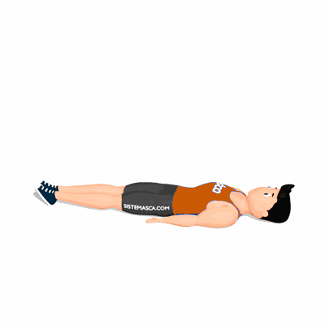

One Leg Circle

O exercício tem como objetivo trabalhar os músculos e a mobilidade do coxo-femural, como também fortalecer o abdômen.
Ficha Técnica
Tipo: Pilates
Grupo Muscular: Corpo
Aparelho: Nenhum
Músculos: Nenhum
Como realizar
- Deite- se de costas;
- Inspire e levante uma perna para o teto, mantendo-a a mais reta possível;
- Expire realizando a metade de um círculo para dentro. Expire e realize a metade do círculo para fora;
- Ao terminar as repetições, inverta a direção do movimento.
 RC STORE
RC STORE